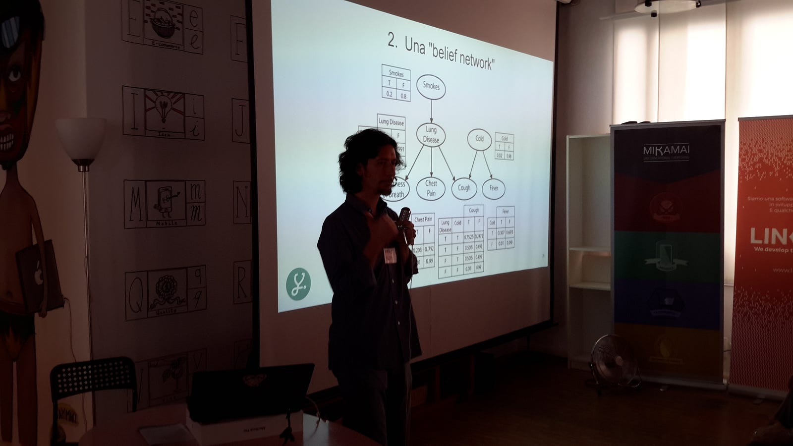

Perché e come collaborare a ConvComp.it
Le aziende attive nello sviluppo, nella commercializzazione e/o nell’utilizzo di applicazioni conversazionali e i singoli ricercatori…

Le aziende attive nello sviluppo, nella commercializzazione e/o nell’utilizzo di applicazioni conversazionali e i singoli ricercatori, esperti ed appassionati di tutte le tematiche correlate alla progettazione e alla fruizione di applicazioni conversazionali multimodali sono invitati a partecipare al blog arricchendolo con nuove informazioni e riflessioni.
L’ intento è di contribuire al rafforzamento della comunità italiana di operatori interessati all’uso di applicazioni conversazionali, contribuendo allo sviluppo di nuove possibili collaborazione e accrescendo la cultura in questo settore a livello nazionale.
Le aziende in particolare possono trovare nella pubblicazione su ConvComp.it un canale per aumentare la loro visibilità nel panorama italiano dei soggetti attivi nell’universo dei chatbot e delle applicazioni conversazionali, divulgando la loro attività e la loro visione tecnologica e di business.
I singoli ricercatori, professionisti ed appassionati possono trovare in ConvComp.it uno strumento per aumentare la diffusione del loro lavoro e del loro punto di vista sull’evoluzione tecnologica in atto.
Per tutti, pubblicare su ConvComp.it è uno strumento per estendere la propria rete e individuare nuovi potenziali collaboratori e partner.
Il blog non ospita una comunicazione direttamente ed esclusivamente commerciale mentre accoglie volentieri contributi di approfondimento relativi alle tecnologie in commercio.
Come pubblicare articoli sul blog ?
Per poter sottomettere un articolo è necessario essere “writer” della pubblicazione:
Per pubblicare su www.convcomp.it bisogna dunque:
- Se non si ha già, creare un account su www.medium.com
2. Diventare writer della pubblicazione inviando una mail a info@convcomp.it, nella quale devono essere forniti nome e cognome, account name su medium e una nota personale/aziendale
3. Scrivere il proprio articolo oppure importare semplicemente un articolo già scritto per altri blog/siti web:
4. La redazione si occuperà di pubblicare al più presto l’articolo proposto, che potrà essere commentato da followers e lettori occasionali.
Gli argomenti ? Dalla tecnologia alla scrittura creativa!
Il blog può essere utilizzato per condividere informazioni e opinioni su temi legati alla progettazione, alla commercializzazione e all’utilizzo di applicazioni conversazionali.
Alcuni argomenti di possibile interesse, che citiamo non per delimitare l’ambito di riferimento del blog ma per fornire possibili spunti: le tecnologie che sottendono engines di intelligenza artificiale, nuove applicazioni di business legate ai chatbots (dal conversational commerce, all’health-care, dall’e-learning alla customer care automation, etc.), la ricerca scientifica del natural language understanding, i protocolli di comunicazione machine-to-machine, i problemi di etica, sicurezza, privatezza dei dati e furto di identità alla ribalta con i sistemi di chatbot impersonation. E poi ancora il tema a me caro delle competenze autoriali nella creazione di bots persona, caratterizzati da personalità e peculiarità (boteness).
Qualche consiglio su come scrivere articoli su medium:
Redazione
- Editors: Giorgio Robino, Giuditta Del Buono.
- Writers: Info, editori e scrittori del blog
- Informazioni: info@convcomp.it
Originally published on Medium.